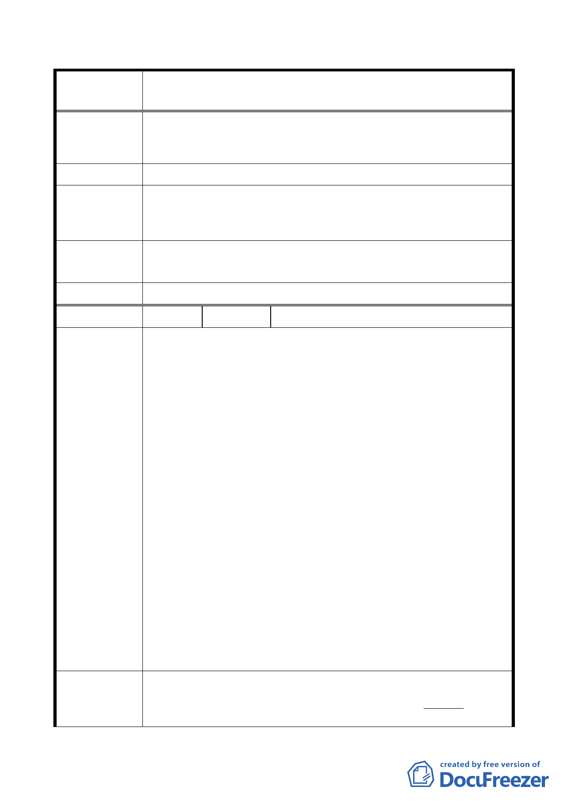

修訂本市都市計畫「臺北市山坡地開發建築要點」為「臺北市
案 名 都市計畫劃定山坡地開發建築管制規定」案
為公園綠地之用，均為可行措施。如此當可使近郊可貴之
數百公頃土地活化，創造本市為數可觀稅收與財政收入，
對無殼市民遴地，亦有所幫助紓解。
建議辦法
依本府加強山坡地安全管理之既定政策，不宜放寬開發強度，
市 府 回 應 避免衝擊山坡地環境安全。
說明
專案小組
同「市府回應說明」。
審查意見
委 員 會 決 議 同「專案小組審查意見」。
編 號 4 陳情人
黃家全等 10 人
土地標示：內湖區碧湖段二小段462、462-3、468、466、468-3、
459、460、458-2、461-2、461-3、490、463、463-1、463-2、
467、488、491、492-5等十八筆地號
一、理由：
（1）依建築技術規則第262條，該自然地形平均坡度超過百分
之三十且未逾百分之五十五者，得作為法定空地或開放空
間使用，不得配置建築。
（2）依憲法有保障人民財產之權利，既然中央法規（建築技術
規則）可將該坡度列入法定空地使用，則已顧到人民之財
陳情理由
產權利，何以首善之區之台北市政府不行？且該地皆有依
法繳納稅金，怎可剝奪市民之財產權利。
（3）請回歸技術規則作此修正。
二、理由：
原有條文第二項有此段文字，已行之有年，並無窒礙難行
之處，且所規定「前項申請開發面積不足二公頃，且符合
第一條（原條文為第三條）規定者，…」皆為都市計畫範
圍之內，應可開發，故請維持原條文之精神，再將該文字
恢復。
三、理由：
對應於前條之修正而增加，以使法條周延。
一、修正條文第二條劃線部分修改：
建 議 辦 法 開發區域內原自然地形平均坡度超過百分之五十五者，除
水土保持設施外，不得作為建築使用，亦不得計入建築基
- 17 -